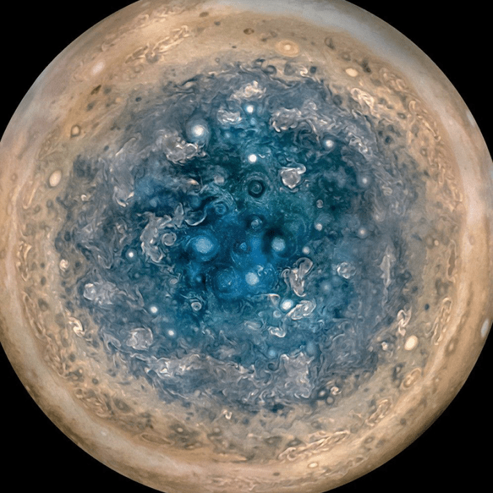
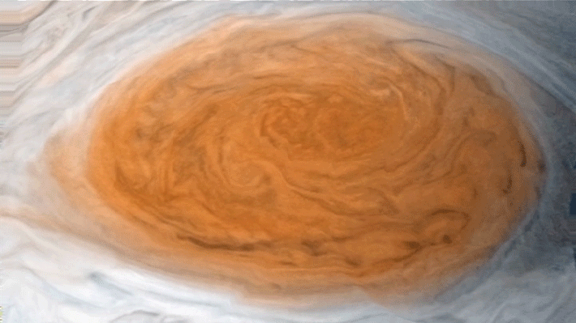
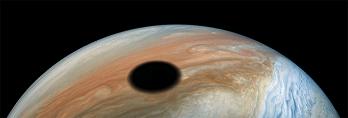
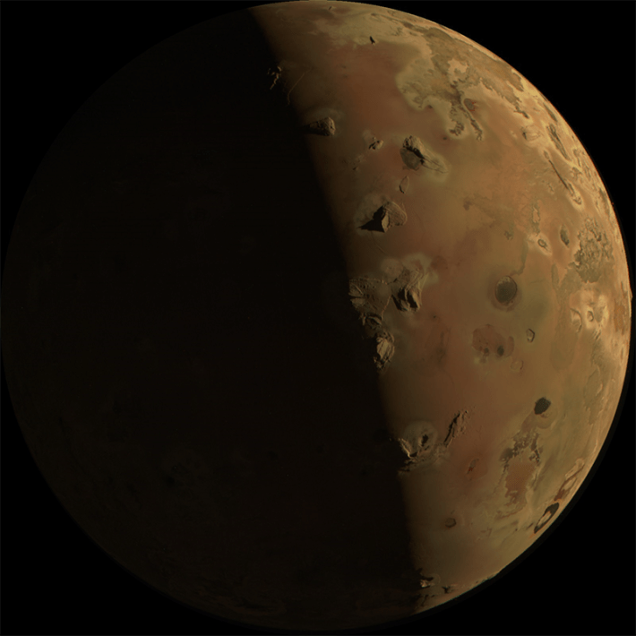
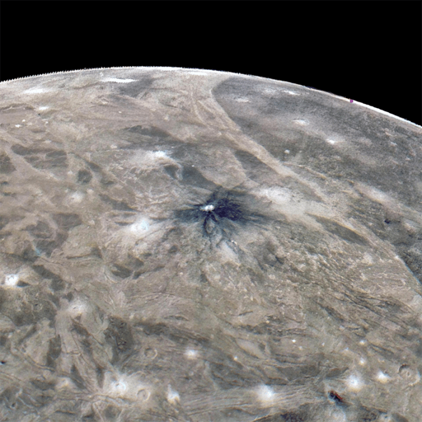
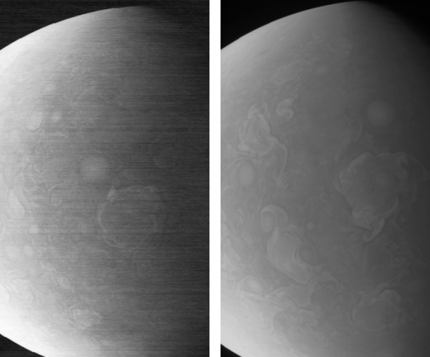
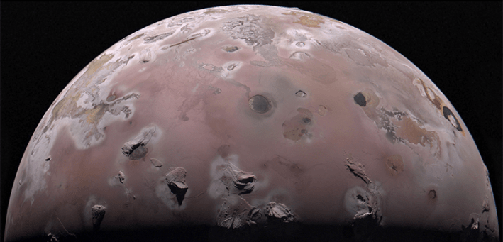

Juno reached Jupiter almost 10 years ago, and it’s been studying the gas giant and its many moons ever since. In fact, just a few days ago, Juno zoomed close (around 3,000 miles) to Thebe, a small, irregularly shaped inner moon, and managed to snap a photo.

Credit: NASA/JPL-Caltech
It’s obviously not the best photo, but that’s because it was taken with Juno’s Stellar Reference Unit camera. Primarily used to image star fields for navigation, this sensitive, low-light camera has been doing double duty collecting observations of Jupiter’s moons and other phenomena on its surface, like “shallow lightning” in the upper atmosphere.
The best shots have been captured by the spacecraft’s JunoCam, its on-board, full-color telescopic camera that’s beamed back some of the most incredible images of Jupiter (and its moons) ever captured. For instance:

SOUTH POLE: An image of Jupiter’s south pole compiled using observations from three separate orbits showing swirling cyclones up to 600 miles in diameter. Credit: NASA/JPL-Caltech/SwRI/MSSS/Betsy Asher Hall/Gervasio Robles.

RED SPOT: A simulated view of Jupiter’s turbulent red spot captured by JunoCam and animated based on models from the Voyager spacecraft and telescopes on Earth. Credit: NASA/JPL-Caltech/SwRI/MSSS/Gerald Eichstadt/Justin Cowart.

SHADOW OF A MOON: Jupiter’s moon Io casts a shadow on its surface 2,200 miles wide. Credit: Enhanced image by Kevin M. Gill (CC-BY) based on images provided courtesy of NASA/JPL-Caltech/SwRI/MSSS.

VOLCANO HAVEN: The violent surface of Io, the most volcanic body in our solar system. Credit: NASA/JPL-Caltech/SwRI/MSSS.

SURFACE OF A MOON: The pockmarked surface of Ganymede. The large dark crater, Kittu, is around 9 miles wide, and the inky material is believed to be leftover from a meteorite that impacted the surface. Credit: NASA/JPL-Caltech/SwRI/MSSS.
NASA originally planned to end Juno’s mission after 32 orbits, but they opted instead to prolong it (it’s past orbit 60). While radiation damage to JunoCam—which extends beyond the spacecraft’s titanium shield—threatened to curtail its operation, NASA was able to fix the camera using a process called “annealing.” Essentially, NASA engineers heated JunoCam up to 77 degrees Fahrenheit to remove its imperfections.

BEFORE AND AFTER: On the left, an image from JunoCam taken during orbit 56 showing grainy “noise” from radiation damage. On the right, an image from JunoCam taken during orbit 57 after the annealing process. Credit: Screenshot from Schaffner, J. et al. IEEE Transactions on Nuclear Science (2026).

NORTH POLE: Another view of Io showing its north pole, taken during Juno’s 57th orbit after the annealing process corrected radiation damage. Credit: NASA/JPL-Caltech/SwRI/MSSS; Image processing by Gerald Eichstädt.
That doesn’t mean, though, Juno, or its camera, will last forever. Thankfully, there’s another spacecraft on the way. The European Space Agency’s JUICE observer launched in 2023 and will reach Jupiter in 2031 to study its icy moons. With its higher-resolution camera, JUICE promises to send back even more breathtaking visuals. 
Enjoying Nautilus? Subscribe to our free newsletter.
Lead image: NASA/JPL-Caltech/SwRI/MSSS; Image processing by Gerald Eichstädt.